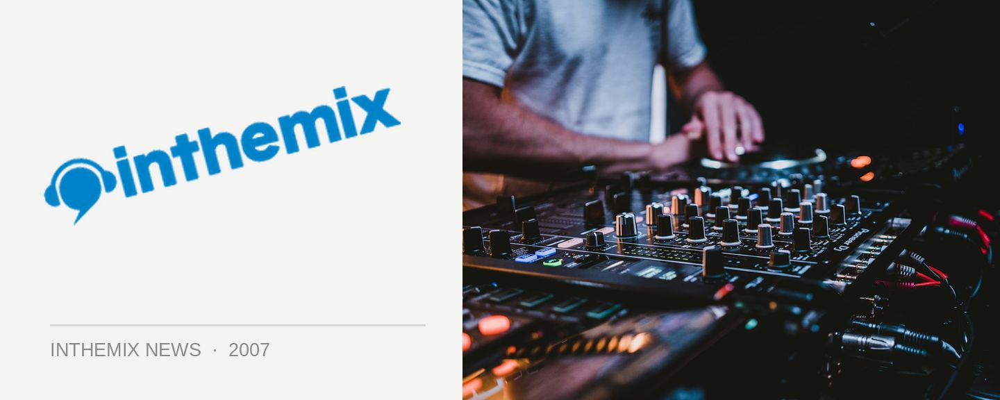

Elefant Traks shoot for Three Strikes
It could quite possibly be the Australian hip hop tour of the year, featuring some of the best talent that the prestigious Elefant Traks label has to offer. The ‘Three Strikes Tour’ will feature Urthboy, The Tongue and Hermitude and it will be taking it across the country in October.
All three artists are enjoying a high profile at the moment. Urthboy’s new album The Signal has been getting a flogging on Triple J and a host of other networks, with the lead single We Get Around also getting a lot of exposure. The Tongue has been in high demand since releasing his Bad Education EP in 2006 and he’s just about to drop his debut Shock and Awe LP in September. The Tongue is one of, if not the hottest new talents in the hip hop scene and is aided by the phenomenal talents of DJ Skoob (current NSW DMC champ). Hermitude also have a new EP out called The Rare Sightings, written on their 2006 tour to destinations such like Japan, Norway, Spain, England and America.
Catch the Elefant Traks ‘Three Strikes Tour’ during October at the following dates ,and check out the video Urthboy’s latest …
Fri 5th Oct: Coorabell Hall Coorabell
Sat 6th Oct: The Zoo Brisbane
Sun 7th Oct: Solbar Coolum
Fri 12th Oct: Gaelic Theatre Sydney
Sat 13th Oct: Trisellies Katoomba
Wed 17th Oct: ANU Canberra
Thurs 18th Oct: Cambridge Hotel Newcastle
Fri 19th Oct: Republic Bar Hobart
Sat 20th Oct: East Brunswick Club Melbourne
Thurs 25th Oct: Electric Light Hotel Adelaide
Fri 26th Oct: Rosemount Hotel Perth
Sat 27th Oct: 3 Bears Dunsborough
Sun 28th Oct: Swan Basement Fremantle